说明：策略一步化布控
“配置一条完整的策略需要来回切换？”
“要先创建好规则才能配置策略？”
“策略上线忘记配置监控熔断导致误伤/漏过？”
为解决操作链路过长，策略布控操作步骤零散不同功能TAB等问题，一步化布控提供在同一个页面从0-1完成策略配置到策略上线的策略布控方式。
策略链路整体概览
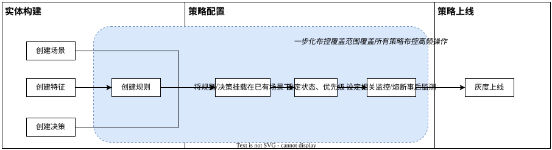
功能入口：https://zeus.sankuai.com/data_zeus_static/#/scene（覆盖Zeus策略 增/删/改/查 流程）
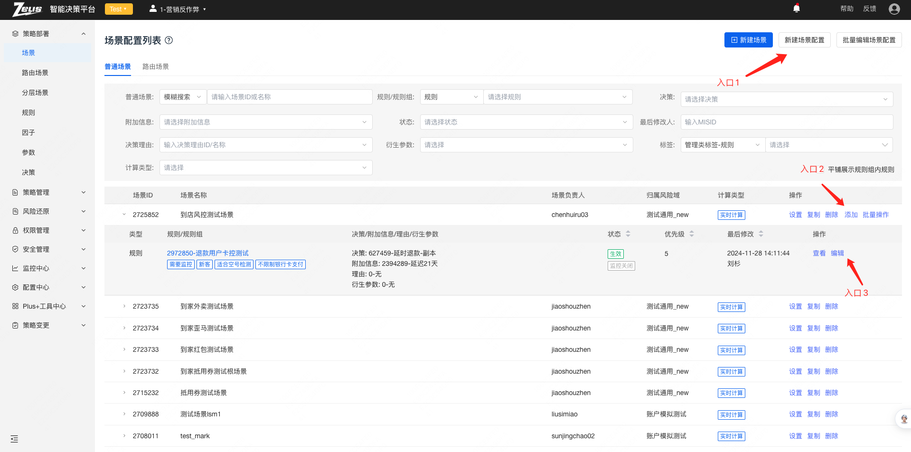
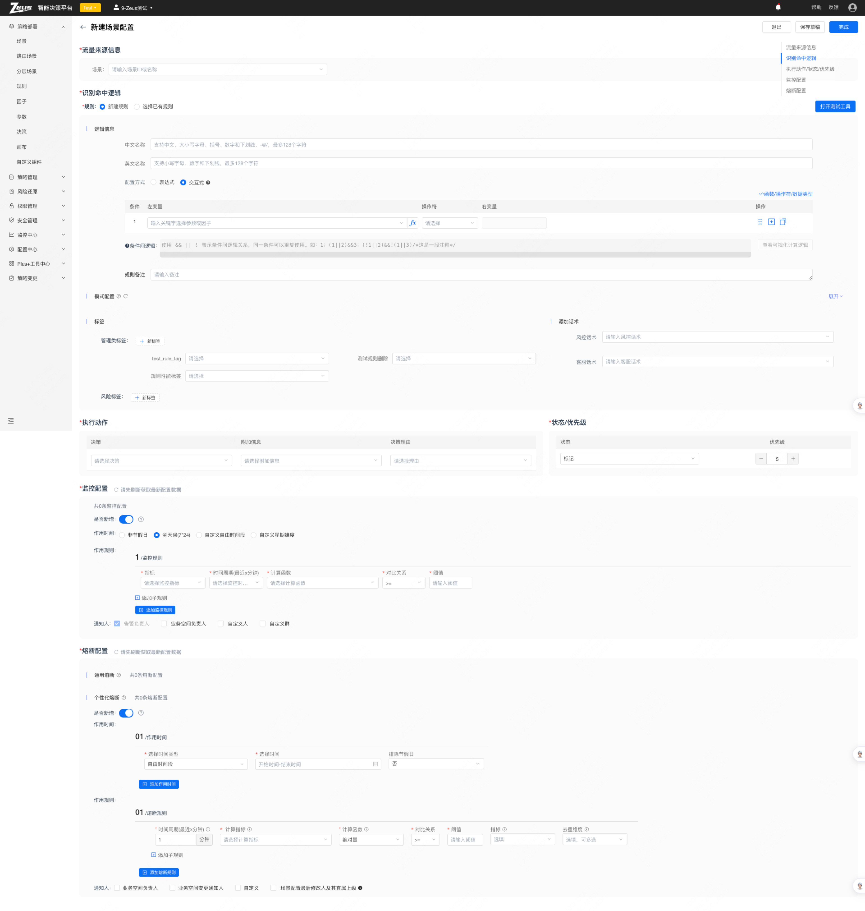
Step1-配置流量
策略的流量来源是什么？
可选择当前空间下的已有Zeus场景，对应场景关联事件流量后续将执行该条场景配置
|
操作说明 |
示意图 |
|---|---|
Q:我的场景没有关联事件流量？我该如何处理？
A：事件到场景的关联映射关系需要策略同学在Tatooine平台上为事件映射对应的场景。平台链接：https://hansolo.vip.sankuai.com/#/eventManageList 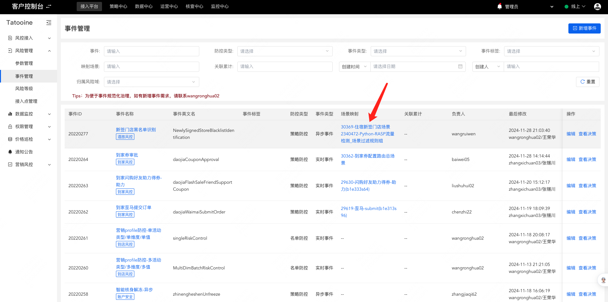 |
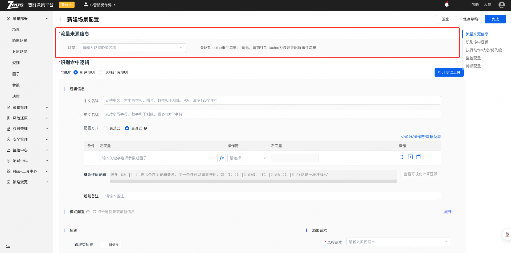 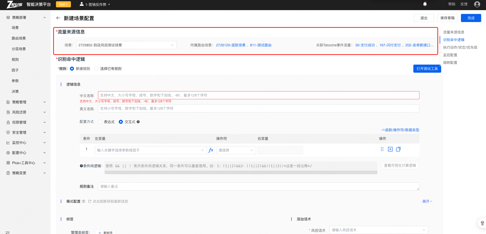 |
Step2-配置识别逻辑
如何判定流量是否存在风险？
可在当前页面新建一条规则或选择使用已有规则对流量中的请求信息进行风险识别
|
操作说明 |
示意图 |
|---|---|
|
【单条】
【批量】
|
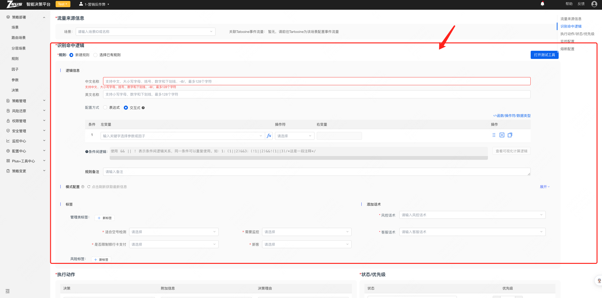 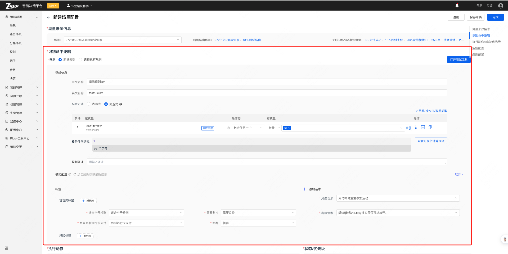 |
|
点击规则右上方「打开调试工具」，对新创建的规则或所使用的已有规则逻辑进行测试。 |
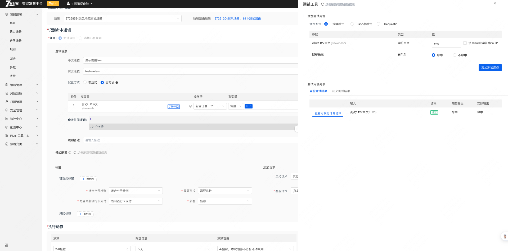 |
Step3-配置执行决策
需要对存在风险的请求执行什么动作？
可在当前页面选择使用已有决策，决策及其附加信息/决策理由在执行规则命中后会输出给调用方
|
操作说明 |
示意图 |
|---|---|
|
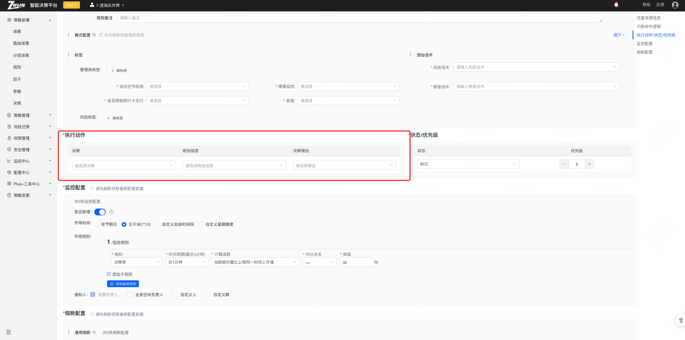 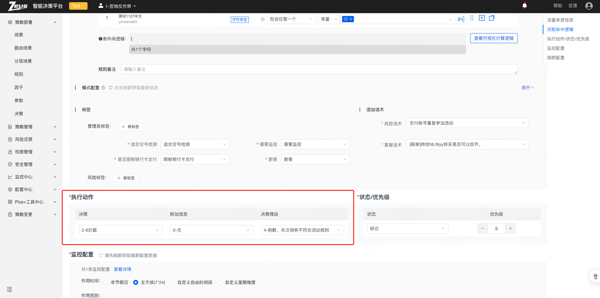 |
Step4-配置策略状态及优先级
策略当前如何执行？多条策略同时命中如何返回业务方？
· 状态：可在当前页面设定策略状态（生效：正常执行并返回决策给业务方/ 标记：正常执行但结果仅落日志不返回业务方 / 离线：不执行该条策略）
· 优先级：多条策略同时命中后，下游将根据优先级对最终命中策略进行合并，数字越小优先级越高
|
操作说明 |
示意图 |
|---|---|
|
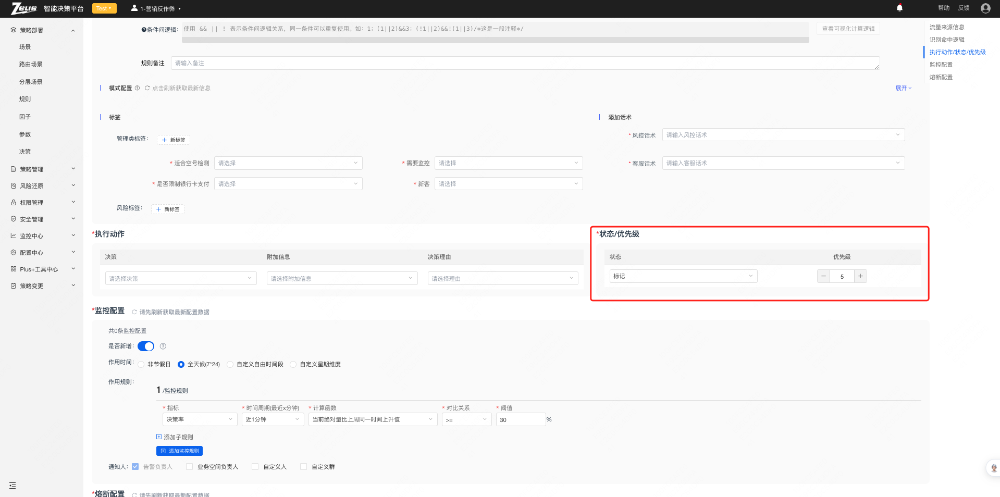 |
Step5-配置监控熔断
策略上线之后担心命中不符合预期？
可在当前页面对于当前策略（当前场景*当前规则*当前决策纬度）设定监控&熔断波动检测配置。
根据【规范】Zeus各空间策略配置监控熔断阈值约定，已要求强卡控1/3/4/5/152/184空间策略发布时每条策略都需要有监控/熔断配置。如有修改诉求，可联系@刘思淼。
|
操作说明 |
示意图 |
||||||||||||||||||||||||||||
|---|---|---|---|---|---|---|---|---|---|---|---|---|---|---|---|---|---|---|---|---|---|---|---|---|---|---|---|---|---|
|
【监控配置】 快速配置当前策略配置的关联监控信息，参考：说明：监控告警 新建监控配置系统默认设定信息
|
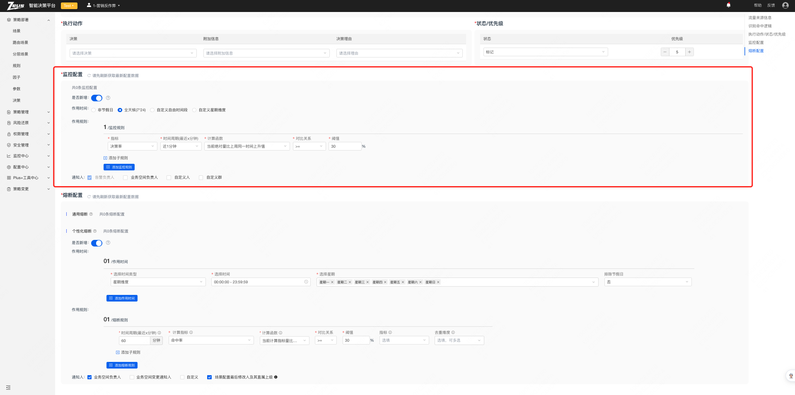 |
||||||||||||||||||||||||||||
|
【熔断配置】 快速配置当前策略配置的关联熔断信息，参考：说明：规则熔断 新建熔断配置系统默认设定信息
|
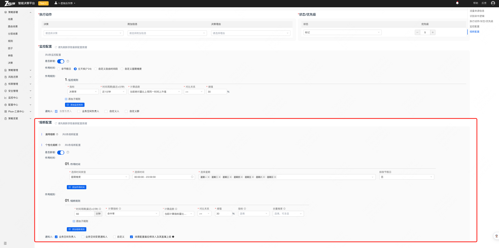 |
后续策略发布
至此，策略配置已全部完成，后续策略发布上线等流程可参考：发布管控用户指南
FAQ
Q:向规则组里面添加规则、向模版里添加规则，可以使用一步化布控吗？
A：一步化布控主要解决完整策略的从0-1布控，而规则组、模版纬度上游缺少场景流量属性，即使添加了也不算是一条完整的策略，因此不属于一步化布控的覆盖范畴内。
Q:我的空间每新增一条配置都需要配置监控和熔断，很麻烦？
A：为了保障策略事后监测链路完善，避免漏配而导致误伤/漏过等问题难以及时发现和排查，平台推荐需要对于每条策略都完善相关监控熔断。如有空间特殊需要，可联系平台豁免或添加相关校验。【规范】Zeus各空间策略配置监控熔断阈值约定
Q:一步化布控覆盖策略范围
A：当前仅实时策略，24年Q1将逐步覆盖近离场景。